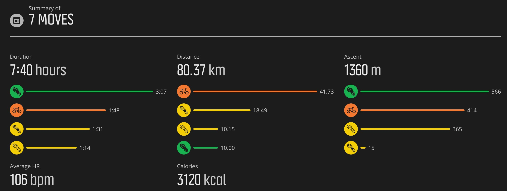

Semaine 21/05/18 au 27/05/18
Semaine 14/05/18 au 20/05/18
- Lundi 14/05
- Mardi 15/05
- Mercredi 16/05
- (CAP) 10,2k/53'10. Endurance dans le jardin du Luxembourg
- Jeudi 17/05
- Vendredi 18/05
- (CAP) 15,5k/1h24' dans Strasbourg.
- Samedi 19/05
- (CAP) 15k trail sur parcours 1 du Duo de l'Hermitage. Allure rapide pendant 4k puis fini avec Vincent. 500 d+
- Dimanche 20/05
- (CAP) 26,6/4h46'. Serre-file sur parcours 2 du Duo de l'Hermitage. 1100 d+. Coolos.
Bonne semaine quand même en distance et un peu de dénivelée sur la fin. Un peu cuit entre les trajets, le travail et le
bénévolat sur le Duo. Roti le Dimanche soir.
Semaine 07/05/18 au 13/05/18
- Lundi 07/05
- Mardi 08/05
- (CAP) 12k/1h15' 453 d+, endurance plus travail de descente depuis l'Emeindras du dessous. Bonnes sensations
- Mercredi 09/05
- (CAP) 9.1k/46'30 endurance le long de l'Isère.
- Jeudi 10/05
- Vendredi 11/05
- (CAP) 20.5k/3h49' 1200 d+. Sappey, Emeindras, Bachasson, A/R Chamechaude, Col de Porte, Sappey. Fartlek en montée.
- Samedi 12/05
- Dimanche 13/05
- (CAP) 33k/4h24', 1170 de d+. Pluie mais bonnes sensations et pas cuit à l'arrivée.
Grosse semaine avec du volume et du d+. Très bonnes sensations en général et sortie longue qui passe nickel.
Semaine 30/04/18 au 06/05/18
- Lundi 30/04
- Mardi 01/05
- Mercredi 02/05
- Jeudi 03/05
- Vendredi 04/05
- (CAP) AS Fontaine. Footing dans Vouillans. Bonnes sensations. 1h08'/8,4k.
- Samedi 05/05
- (CAP) 15'/2,4k facile
- (CAP) 40''/6,8k facile
- Dimanche 06/05
- (CAP) Rando Ecotoux 7,8/2h37' facile, 425 d+
Semaine récup post-3 pucelles. Bonnes sensations en général et plus de confiance.
Semaine 23/04/18 au 29/04/18
- Lundi 23/04
- Mardi 24/04
- (CAP) 8,5k/45' tranquille le long de l'Isère
- Mercredi 25/04
- Jeudi 26/04
- (CAP) 5,3k/29' tranquille au Sappey, sol souple.
- Vendredi 27/04
- Samedi 28/04
- (CAP) 3,7k/21' tranquille au Sappey, sol souple.
- Dimanche 29/04
- (CAP) 23k/2h26', trail des 3 pucelles, 2h26'35" (99/400, 6e V2/55). Tops sensations à part dans les 3 derniers cramoisi.
Semaine de récup en vue des 3 Pucelles et trail en fin de semaine. Belle entrée en matière et content du travail hivernal du coup.
Semaine 16/04/18 au 22/04/18
- Lundi 16/04
- Mardi 17/04
- (Vélo) Vélo taf 27k
- (CAP) 11k/1h05'36, 370m d+. Bonnes sensations. Travail de vitesse en descente en mode fartlek.
- Mercredi 18/04
- (CAP) 7,2k/51' 30' de fartlek en descente à partir du col de Portes. Bcp de neige au début mais ok ensuite. Bonnes sensations.
- Jeudi 19/04
- (CAP) 10k/51'15" tranquille le long de l'Isère.
- Vendredi 20/04
- Samedi 21/04
- (CAP) 9k/45'30, dont 2x10x30/30 (2').
- (Rando) 5k, 300 d+
- Dimanche 22/04
- (CAP) Sortie trail assez cool, 13,3k/1h52', Ecoutoux + Palaquit + Churut. Bonnes sensations.
Bonne semaine avec des belles sensations, cool. Place à la récup pour les 3 Pucelles.
Semaine 9/04/18 au 15/04/18
- Lundi 09/04
- Mardi 10/04
- Rien, récup pour ma cheville (blessure glace)
- Mercredi 11/04
- (CAP) 10,2/1h14', séance cotes (7x1' montée/1' trotté + 8x1' descente/1' marché), 370m d+
- Jeudi 12/04
- Vendredi 13/04
- Samedi 14/04
- (CAP) 10k rando-course à St Pierre de Chartreuse. 600m d+
- Dimanche 15/04
- (CAP) 18,5k/1h30'43 Endurance et tempo le long de l'Isère.
Semaine avec pas mal de travail encore d'où le faible kilométrage mais belles séances quand même et reprise vélo.

Semaine 2/04/18 au 8/04/18
- Lundi 2/04
- Mardi 3/04
- (CAP) 7,7k/51' dont 10x30/30 en côte. (à Nice).
- Mercredi 4/04
- Jeudi 5/04
- Vendredi 6/04
- Samedi 7/04
- (CAP) 25k/3h04'44", Bonnes sensations en côte. 1100 d+. Repérage 3 pucelles.
- Dimanche 8/04
Semaine compliquée avec le travail et trajets Nice et Toulouse.
Semaine 26/03/18 au 01/04/18
- Lundi 26/03
- Mardi 27/03
- Rien (Paris et hotel à Roissy!)
- Mercredi 28/03
- (CAP) 11k/1h11' dont 2x7x1'/1' en cote (1er dans un champ, 2e sur route). Bonnes sensations.
- Jeudi 29/03
- (CAP) 12,7k/1h05' endurance le long de l'Isère en partie sous la pluie. Bonnes sensations.
- Vendredi 30/03
- Samedi 31/03
- (CAP) 11,5/2h Sortie trail dure dans neige. 2 Emeindras. 450 d+
- Dimanche 01/04
- (CAP) 18k/1h30. Le long de l'Isère. Pour faire un peu de kil
Semaine un peu chaotique en terme de boulot et de météo mais un peu de kil qd même.

Semaine 19/03/18 au 25/03/18
- Lundi 19/03
- Mardi 20/03
- (CAP) 5,4k/34', run dans neige tassée
- Mercredi 21/03
- (CAP) 10k/1h10' neige + piste ski Sappey. Une seule fois 7x1'/1' en cote (à cause de la nuit)
- Jeudi 22/03
- (CAP) 13k/1h05' endurance + 10' à fin tempo
- Vendredi 23/03
- (CAP) 9k/54' dont 2x10x30/30. AS Fontaine. Bonnes sensations et bonne allure en général. Un peu plus rapide sur les récups
- Samedi 24/03
- (CAP) 10k/2h, repérage partie haute 3 pucelles, 650 d+
- (CAP) 4,7k/32' avec ma fille, facile
- Dimanche 25/03
- (CAP) 13k/1h22' avec Décathlon sur berges de l'Isère. Tranquille
Première grosse semaine avec 7 sorties à pied et presque 1200 de d+. Bonnes sensations en général. Ca commence à venir.
Semaine 12/03/18 au 18/03/18
- Lundi 12/03
- Mardi 13/03
- (CAP) 11k/1h15', dont 2x6x50" cote/descente cool. Une partie sous la pluie en mode holliday on ice dans la cote.
- Mercredi 14/03
- (CAP) 6,5k/37' à jeun, coolos
- (CAP) 8,2k/45' footing
- Jeudi 15/03
- Vendredi 16/03
- (CAP) 13k/1h10, AS Fontaine. 2x5x2'45"/45". Sensations bof et jambes lourdes mais c'est passé qd meme.
- Samedi 17/03
- (CAP) 7,8k/1h11, A/R Emeindras. Grosse neige mais bonnes sensations.
- Dimanche 18/03
- (CAP) 5k/25'30, Asparun avec joelette avec Adam et l'équipe Décathlon.
Bonne semaine avec 6 sorties à pied. Bonnes sensations en général sauf pour la VMA de vendredi.
Semaine 05/03/18 au 11/03/18
- Lundi 05/03
- Mardi 06/03
- (CAP) 6,7k/45'50, dont 10x30/30 en côtes. Bonnes sensations (mais trop de glace pour la 2ème série
- Mercredi 07/03
- (CAP) 7,8k/49' avec Lucie. 3x1000/2' (4'09, 4'13, 4'13)
- Jeudi 08/03
- Vendredi 09/03
- (CAP) AS Fontaine. 9,7/1h, dont 2x10x30/30. Bonnes sensations
- Samedi 10/03
- Dimanche 11/03
- (CAP) 10,2k/1h02, 336 d+ Sensations OK
Semaine 26/02/18 au 04/03/18
- Lundi 26/02
- Mardi 27/02
- Mercredi 28/02
- (CAP) 10.8/53' Endurance (froid !)
- Jeudi 01/03
- (CAP) 11k/59' Endurance Bordeaux
- Vendredi 02/03
- (CAP) 6k/39' à jeun coolos
- Samedi 03/03
- Dimanche 04/03
- (Rando) 6k, 1h46' dans grosse neige
Semaine 19/02/18 au 25/02/18
- Lundi 23/02
- Mardi 24/02
- Mercredi 25/02
- (CAP) 11k/1h08' 400 d+. Trop froid pour fractionné.
- Jeudi 26/02
- Vendredi 27/02
- (CAP) AS Fontaine. 13k/1h16' - 2x5x2'45"/40" (4'). Ok sur les 3 1ers et durs les 2 derniers à chaque fois mais bien qd même.
- Samedi 28/02
- (CAP) Sortie trek dans la neige au Habert 8,8k/2h06 624 d+ dur mais top.
- Dimanche 29/02
- (CAP) 1h18'/15k, Endurance. Un peu toasté de la fin de semaine qd même.
Bonne semaine finalement et belle séance pleine vendredi soir.
Semaine 12/02/18 au 18/02/18
- Lundi 12/02
- Mardi 13/02
- (Vélo) 30' HT dont 2x8x30/30
- Mercredi 14/02
- Jeudi 15/02
- (CAP) 6,2k/32' autour du Luxembourg (Paris)
- Vendredi 16/02
- (CAP) 6,3k/33' jardins du Luxembourg à jeun (Paris)
- Samedi 17/02
- (CAP) 7k/35'30, Essai chaussures Décathlon Long et Fast
- (CAP) 7,6k/1h15', 360 d+, Sortie trail dans la neige en partie de nuit. A/R l'Emeindras du dessous.
- Dimanche 18/02
- (CAP) sortie longue 15k/1h15'30. Bonne sensations au début et un peu cramé à la fin. Une bonne partie à 13 km/h.
Début de semaine pas top mais ok ensuite. Bonnes sensations en général quand même. Par contre pas de séance de VMA en
course (une en vélo en début de semaine).

Semaine 05/02/18 au 11/02/18
- Lundi 05/02
- Mardi 06/02
- Mercredi 07/02
- Jeudi 08/02
- Vendredi 09/02
- (CAP) 56'20/10,1k VMA 2x10x30/30 (3')
- Samedi 10/02
- Dimanche 11/02
- (CAP) 1h08'/13,6k, allure tempo sur le retour
Semaine un peu compliquée au travail. Petite semaine du coup.

Semaine 29/01/18 au 04/02/18
- Lundi 29/01
- Mardi 30/01
- (CAP) 59'30/10,7k 2x10x30/30 VMA (3')
- Mercredi 31/01
- Jeudi 01/02
- Vendredi 02/02
- (CAP) 56'24/8,85k AS Fontaine. Sensations pas top. 1x2'05/30" VMA
- Samedi 03/02
- Dimanche 04/02
- (CAP) 1h52'06/13,80 730 d+. Raidlight Winter Trail. 100e/260, 8e V2. Sensations ok. Bouse en descente. Pas trop arrivé à
m'arracher quand même.
Semaine meilleure que la précédente mais pas encore top.

Semaine 22/01/18 au 29/01/18
- Lundi 22/01
- Mardi 23/01
- Mercredi 24/01
- (CAP) VMA 2x6x2'05/30" sur les quais. Bonnes sensations à part les 3 derniers vraiment durs. 12,3k/1h06'
- Jeudi 25/01
- Vendredi 26/01
- Samedi 27/01
- Dimanche 28/01
Semaine pourrie au boulot.

Semaine 15/01/18 au 21/01/18
- Lundi 15/01
- Mardi 16/01
- Mercredi 17/01
- (CAP) VMA 8,4k/58', 2x10x30/30 (3'). Sur neige avec légère cote. Bonnes sensations malgré le froid. Cool.
- Jeudi 18/01
- (Nat) 1300m à 7h. Les sensations reviennent aussi en nat. Cool.
- (CAP) 8,4, 45', footing tranquille pour récupérer. Fatigué et jambes lourdingues.
- Vendredi 19/01
- (CAP) VMA 2x6x2'05/30 (3'). 13.4k/1h13' en tout. Séance dure mais sensations ok.
- Samedi 20/01
- (CAP) 25' footing échaufft pour PPG et récup VMA de la veille
- (PPG) 2x10x30/30 gainage/abdos/muscu
- Dimanche 21/01
- (CAP) 12.5k/1h04'50, Fatigué
Bonne semaine pleine avec les deux séances de VMA. Fatigué en fin de semaine mais normal. Bonnes sensations qd meme.
Semaine 08/01/18 au 14/01/18
- Lundi 08/01
- (CAP) 4k de nuit au Sappey, allure souple
- Mardi 09/01
- Mercredi 10/01
- (CAP)9,5k, 57'. Une série de 6x2'05/30" en cote au Sappey pour reprendre sérieux
- Jeudi 11/01
- Vendredi 12/01
- (CAP) Séance VMA avec Lucie sur piste. 2x10x30/30 (3'). (13k, 1h17) Sensations qui reviennent.
- Samedi 13/01
- Dimanche 14/01
- (CAP) 12k, 1h03' Endurance++. Bonnes sensations
Bon retour au sport. 39k en course et 2 séances VMA et une séance de nat tranquille.

Semaine 01/01/18 au 07/01/18
- Lundi 01/01
- Mardi 02/01
- Mercredi 03/01
- Jeudi 04/01
- Vendredi 05/01
- (CAP) Fontaine, 10k. 1 série de 6x2'05/30 allure de bouse. Baché
- Samedi 06/01
- Dimanche 07/01
- (Nat) 1,2k cool pour remonter la pente
Semaine à oublier.
Bilan 2017
283 sessions tous sports confondus, 350 heures, 63167m d+.
- 1209 kms en course à pied (121h, 10224m d+)
- 677 kms en trail (113h, 37530m d+)
- 185 kms en rando (54h, 9807m d+)
- 874 kms vélo (37h, 5606m d+)
- 32kms de natation (15h)

Semaine 25/12/17 au 31/12/17
- Lundi 25/12
- Mardi 26/12
- (CAP) 58'44/10,7k, 3x6x30/30 en nature le long de l'Isère. Sensations ok.
- Mercredi 27/12
- (Vélo) HT 30' dont 10x30/30 vélocité
- (PPG) 15'
- Jeudi 28/12
- Vendredi 29/12
- Samedi 30/12
- Dimanche 31/12
Semaine 18/12/17 au 25/12/17
- Lundi 18/12
- Mardi 19/12
- Mercredi 20/12
- Jeudi 21/12
- (CAP) 38'/6k. Coolos de nuit au Sappey.
- Vendredi 22/12
- (CAP) 53'/8k, séance Fontaine. 2x6x30/30. Sensations de daube. Laissé tombé la dernière série. Soupir.
- Samedi 23/12
- Dimanche 24/12
Semaine compliquée encore avec sensations de daube en fin de semaine. Ca va revenir.
Semaine 11/12/17 au 17/12/17
- Lundi 11/12
- Mardi 12/12
- (Vélo) 20' home-trainer bonne allure
- PPG 20'
- Mercredi 13/12
- Jeudi 14/12
- Vendredi 15/12
- (CAP) Séance piste. Echaufft + educ + 2x7x1'30/30 (3') + récup. Séance solide et pratiquement 400 à chaque
fois, 13,4k en tout. Pulses max atteintes presque sur chaque répet.
- Samedi 16/12
- (CAP) 31'/6k récup après séance de la veille
- Dimanche 17/12
- (Ski) Alpin au Sappey. Trop cool.
Semaine 4/12/17 au 10/12/17
- Lundi 4/12
- Mardi 5/12
- Mercredi 6/12
- Tests chaussures RaidLight 2019 et travail avec le concepteur. 5k dans terrain pourri (neige, boue).
- Jeudi 7/12
- Vendredi 8/12
- (CAP) séance AS Fontaine, 3x6x30/30. Bonnes sensations au final meme si naze avant et naze après. Max en pulses obtenu sur la
dernière série. 10k.
- Samedi 9/12
- (CAP) 4,5k en 30' dans la neige au Sappey. Un peu cuit mais cool quand même.
- Dimanche 10/12
Semaine bof encore (malgré la bonne séance le vendredi). Jetlag, boulot et conditions climatiques.
Semaine 27/11/17 au 03/12/17 (Hawaii)
- Lundi 27/11
- Mardi 28/11
- 20' PPG
- (CAP) 8k tempo, fatigué
- Mercredi 29/11
- Jeudi 30/11
- Vendredi 01/11
- Samedi 02/11
- (CAP) Séance VMA, 18' Echaufft, 2x7x1'30/30" ((3'), 10' Récup. 10k, 55'. Bonnes sensations
- Dimanche 03/11
Semaine bof avec temps pourri et pas beaucoup de temps pour l'entrainement. J'ai pu qd même sauver la séance et VMA avec des bonnes
sensations.
Semaine 20/11/17 au 29/11/17 (Hawaii)
- Lundi 20/11
- Rien, récup + vol vers Honolulu
- Mardi 21/11
- (CAP) 6k trail, 44', 311 m d+
- Mercredi 22/11
- Jeudi 23/11
- Vendredi 24/11
- (CAP) 11,6k/1h07', VMA 3x6x30/30
- Samedi 25/11
- Dimanche 26/11
Semaine ok à Hawaii mais temps pas top (beaucoup de pluie) et obligé de prendre la voiture pour aller courir.
Semaine 13/11/17 au 19/11/17 (Denver)
- Lundi 13/11
- Mardi 14/11
- Mercredi 15/11
- (CAP) 42'28/8k à jeun. Bonnes sensations
- Jeudi 16/11
- Vendredi 17/11
- (CAP) Rando/course 15k avec 800m d+ 3h13, tranquille.
- Samedi 18/11
- (Nat) 2000m
- (CAP) 48'/9k assez facile
- Dimanche 19/11
Semaine un peu compliquée à organiser pour les entrainements mais au final pas mal qd meme (7h41' d'entrainement, 47k à pied, 2
en nat. Le tout entre 1700m et 2000m). Sensations meilleures au court de la semaine.
Semaine 6/11/17 au 12/11/17
- Lundi 6/11
- Rien (temps pourri, boulot)
- Mardi 7/11
- (CAP) 54'/10k, bonne allure (avec Byron). Froid.
- Osthéo
- Mercredi 8/11
- Jeudi 9/11
- Vendredi 10/11
- (CAP) VMA, 30' échauffement, Ed, 3x6x(30/30), 10' retour au calme. Bonnes sensations
- Samedi 11/11
- Dimanche 12/11
- (CAP) Run bon rythme autour du Boulder Reservoir. Bien fatigué qd meme. Pas insisté du coup
- (CAP) Footing 45' en fin d'après-midi. 16 kms en tt pour la journée
Sensations ok cette semaine. Bien sur le fractionné du vendredi. Naze à Denver/Boulder (mais on est à 1800m + voyage). 37k,
3h26' CAP. Semaine light avant départ aux US + osthéo.
Semaine 30/10/17 au 05/11/17
- Lundi 30/10
- Mardi 31/10
- (Nat) 1,5k plutot tech, bonnes sensations (ca revient!)
- Mercredi 01/11
- (CAP) 1h05' Fartlek. 6x (une cote dure + chaise) + une cote plus longue sur la fin
- (Rando) 3h facile (Ecoutoux)
- Jeudi 02/11
- Vendredi 03/11
- (CAP) Test VMA Stade. 1h05' en tt. Monté à 16,5 (Pulses max 167)
- PPG + stretch
- Samedi 04/11
- (CAP) Lyon Urban Trail by Night en mode accompagnant. 12k en 1h58', 600 d+
- Dimanche 05/11
- (CAP) 42' bon rythme dans le Sappey.
Semaine plutot light sans velo et une seule natation. 8h50 malgré tout (1,5k en nat, 0 vélo, 46 à pied). Inscription pour le
trail des 3 pucelles (29 avril) sur le 23 kms.
Semaine 23/10/17 au 29/10/17
- Lundi 23/10
- Mardi 24/10
- (CAP) 30' footing tranquille
- Mercredi 25/10
- (Vélo) 2x14k vélo taf tranquille
- (Vélo) 40k vélocité
- Jeudi 26/10
- (Vélo) 20k vélo taf tranquille
- (CAP) 48' footing assez tranquille
- Vendredi 27/10
- (CAP) 35' footing tranquille (dont une petite cote pour le fun). :-)
- (CAP) stade, échauft + 2x8x45/30 + Récup. Bonnes sensations. Plus rapide sur les récup entre les 45 et les 30
- PPG + stretch
- Samedi 28/10
- Dimanche 29/10
- (CAP) 1h end + tempo. Bonnes sensations
Bonnes sensations cette semaine. 9h08' d'entrainement (3k nat, 87k vélo, 40k cap).
Last modified: Tue May 22 09:51:56 CEST 2018